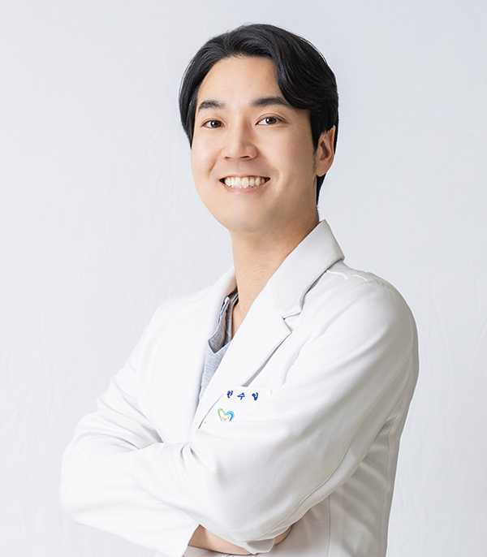
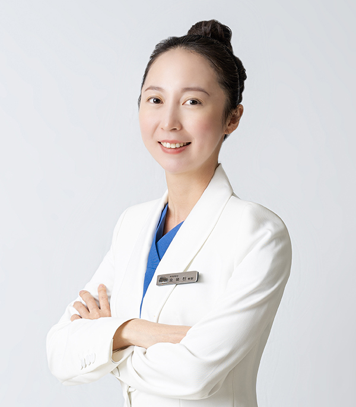
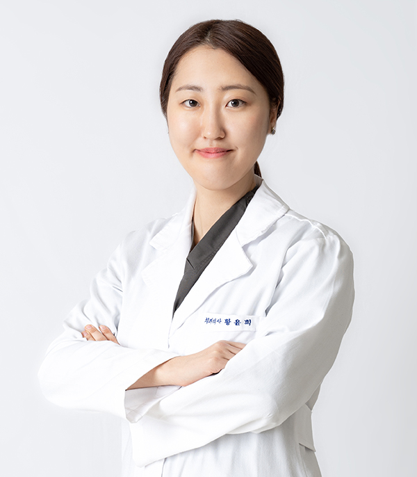
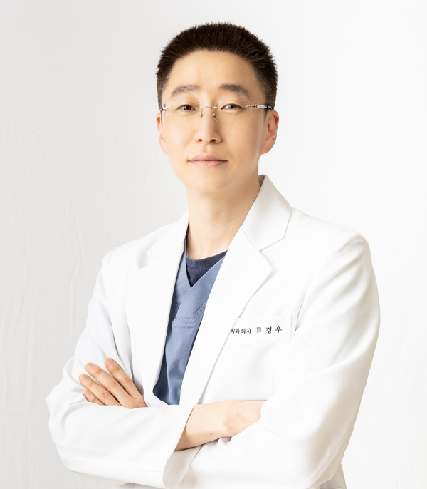
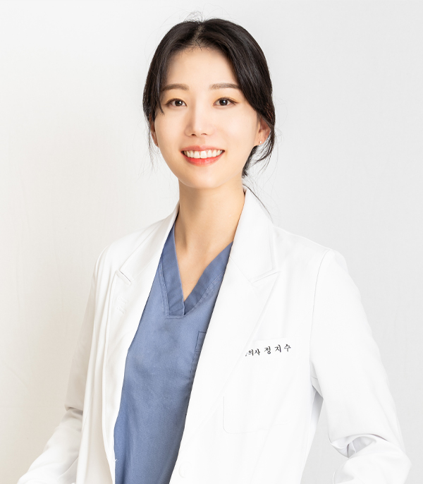
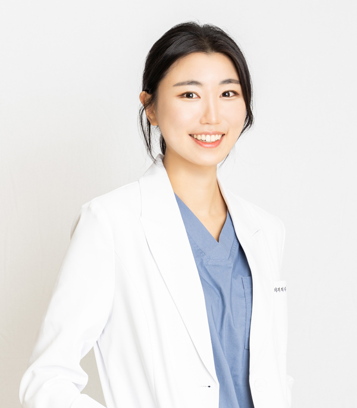

<%=m_client_name_s%> 의료진 소개
<%=m_client_en%>
<%=m_client_name%>
의료진 인사말
1만 시간의 법칙
성공의 임계점
캐나다 맥길대의 신경과학자 다니엘 레비틴 교수의 연구에 따르면,
어느 분야에서든 세계적 수준의 전문가의 치위에 오르려면
적어도 1만 시간 정도의 연습이 필요하다고 합니다.
1만 시간은 하루도 거르지 않고
날마다 3시간씩 훈련을 한다고 가정할 경우,
약 10년에 해당하는 시간입니다.
[출처] 성공의 임계점, 1만 시간의 법칙
인생을 살아가면서 필요한 의, 식, 주 중 가장 큰 즐거움이 '식' 이라는 건 우리 모두에게 공통된 의견입니다.
하지만 오랜시간동안 ‘식‘의 즐거움을 잊은 채 살아오신 많은 분들이 계셨고, 이에 치과의사로서 저의 다짐은 더욱 단단해졌습니다.
<%=m_client_name_s%>치과를 찾아주신 모든 분들께 '씹는 즐거움' 을 되찾아드리고, 앞으로도 '행복한 인생' 을 살아가실 수 있게 최선의 진료를 다하겠습니다.
"씹는 즐거움, 행복한 인생을
책임지겠습니다"
<%=m_client_name%> 의료진
한수일 원장
임플란트 전담의
- 전북대학교 치과대학 겸임교수
- 통합치의학 전문의(보건복지부 인증)
- 원광대 치의학대학원 박사 과정 수료
- 아주대 치의학대학원 석사
- 원광대 치과대학 졸업
- 남성고 졸업
- 대한구강악안면임플란트학회 정회원
- 대한치과이식임플란트학회 정회원
- 대한치과교정학회 정회원
- 대한턱관절교합학회 회원
Han Suil

<%=m_client_name%> 의료진
오유진 원장
치과교정과 전담의
- 통합치의학과 전문의(보건복지부 인증)
- 이화여대 치의학대학원 교정학 석사
- 인비절라인 인증 치과의사
- 대한치과교정학회 정회원
- 대한설측교정학회 회원
- 통합치과학회 정회원
- 심미치과학회 정회원
- 대한보철학회 정회원
Oh Yujin

<%=m_client_name%> 의료진
배대천 원장
임플란트 전담의
- 조선대 졸업
- 이화여자대학교 구강악안면외과인턴수료
- 목포과학대학치위생과교수역임
- 미국뉴욕NYU치과대학임플란트학과수료
- 미국플로리다Nova southeastern University치과대학방문교수
- CIEL임플란트연구회학술이사
- ALC임플란트advanced course수료
- 대한치과이식학회정회원
- 대한치과보철학회정회원
- 대한악관절교합학회정회원
- 한국임상교정연구회정회원
Bae Daecheon

<%=m_client_name%> 의료진
황윤희 원장
보철과 원장
- 일반진료 원장
- 전남대학교 치의학전문대학원 졸업
- 치의학 석사 학위 취득
- Practical Digital Dentistry
- standard implant training course 수료
- 전) 명곡치과 검진 과장
- 전) 삼성 창원병원 치과 과장
Hwang Yunhee

<%=m_client_name%> 의료진
류경우 원장
보철과 원장
- 원광대학교 치과대학 졸업
- 대한구강악안면임플란트학회 KAOMI회원
- Mind 소통 역량상 (글로벌소통역량)
- Highness implant system 교육과정이수
- 고급치의학연수과정
Ryu Gyeongu

<%=m_client_name%> 의료진
정지수 원장
보철과 원장
- 전남대학교 치의학전문대학원졸업
- 치의학석사 학위 취득
- 보스턴 대학교 졸업
jisu jung

<%=m_client_name%> 의료진
이예진 원장
일반진료 원장
- 원광대학교 치과대학 졸업
- 가톨릭대학교 성빈센트병원 통합치과전문임상의 수련
- Dentis implant course 수료
- Doctors endo seminar 수료
Lee Yejin
